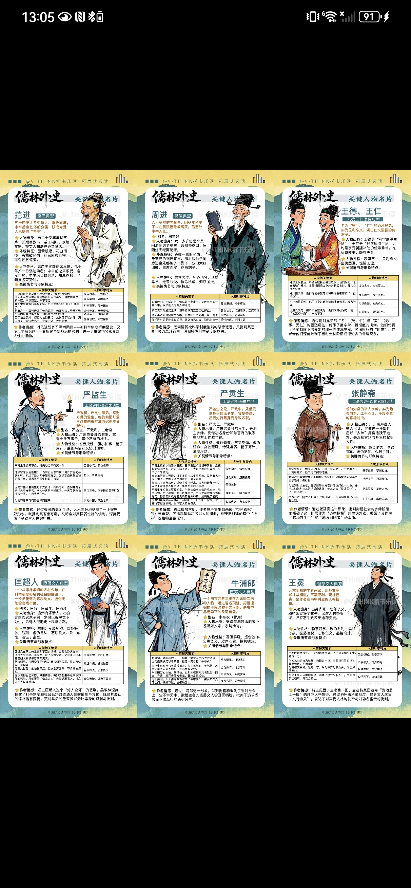

🔍 点击放大原图
🔍 点击放大原图
原图详细阐述吴敬梓生平以及 1-56 回的四大历史演进分期。
【一、文学常识】：
1. 《儒林外史》是一部长篇章回体小说，也是一部典型的讽刺小说。书中刻画了一些深受八股科举制度毒害的儒生形象，反映了当时世俗风气的败坏。
2. 作者吴敬梓，字敏轩，号粒民，晚号文木老人、秦淮寓客，安徽全椒人，清代小说家。著有《文木山房集》《文木山房诗说》、讽刺小说《儒林外史》等。
【二、全书结构脉络】：
• 第一回（引子）：王冕隐居会稽山，借王冕树立理想文人标杆，揭示八股之害；
• 第 2-30 回：周进、范进、严氏兄弟、王惠、汤奉等，刻画被功名利禄扭曲的儒林群丑；
• 第 31-46 回：杜少卿、庄绍光、虞育德、迟衡山等真名士登场，寄托作者改良社会的理想；
• 第 47-54 回：八股恶俗蔓延民间，士风日下；
• 第 55 回（尾声）：市井四大奇人（季遐年、王太、盖宽、荆元）。
 🔍 点击放大原图
🔍 点击放大原图
提炼杜少卿、迟衡山、庄绍光、虞育德，以及郭孝子、沈琼枝、市井四大奇人。
| 人物与回目 | 性格品质 | 核心情节 |
|---|---|---|
| 杜少卿 (33-34回) | 不拘礼法、乐善好施、傲视权贵 | 敬奉娄老太爷送其归乡；出资帮鲍廷玺建戏班；携妻游园反对纳妾，力挺沈琼枝。 |
| 迟衡山 (34-35回) | 敢挑战权威、懂礼乐 | 著《诗说》反对朱熹观点；倡导并策划泰伯祠祝祭。 |
| 庄绍光 (34-35回) | 不屈权贵、不逐名利 | 闭门著书不妄交一人；婉拒朝廷征辟；避居玄武湖。 |
| 虞育德 (36-37回) | 知书达礼、乐善好施 | 救轻生青年买棺葬父；拒绝生日收礼；协助郭孝子寻父。 |
| 沈琼枝 (40-41回) | 自尊自强、大胆泼辣 | 不愿做妾，逃婚抗婚；在南京卖诗卖刺绣谋生，怒打劣绅官差。 |
| 四大奇人 (55回) | 身怀绝技、淡泊归真 | 季遐年（写好字）、王太（下好棋）、盖宽（画好画）、荆元（弹好琴）。 |
 🔍 点击放大原图
🔍 点击放大原图
按章节梳理王冕、周进范进、严氏兄弟、匡超人、牛浦郎、鲍文卿、沈琼枝、四大奇人。
• 第 1 回：王冕（全书引子，放牛自学画荷，蔑视权贵隐居）；
• 第 2-3 回：周进、范进（周进撞号板大哭吐血，范进喜极而疯）；
• 第 4-7 回：严监生、严贡生、王德王仁（两根灯草、云片糕讹诈、伪道学）；
• 第 8-14 回：王惠、鲁编修、马二先生（贪官酷吏、八股迷闺秀、评选八股）；
• 第 15-20 回：匡超人（孝子沦为伪造公文、抛妻再娶的市侩）；
• 第 21-24 回：牛浦郎（偷窃牛布衣诗稿招摇撞骗，被当面拆穿）；
• 第 24-26 回：鲍文卿、胡屠户（鲍文卿尊礼守法；胡屠户前倨后恭）；
• 第 31-36 回：杜少卿、迟衡山、庄绍光（泰伯祠大祭，反礼教真名士）；
• 第 40-41 回：沈琼枝（奇女子抗婚，南京卖诗刺绣自食其力）；
• 第 48 回：王玉辉（赞女绝食殉节求名，骨肉凋零后心碎悲泣）；
• 第 55 回：市井四大奇人（季遐年写字、王太围棋、盖宽画画、荆元抚琴）。
 🔍 点击放大原图
🔍 点击放大原图
官方教研将全书 30 位人物分为四大阵营，形象与情节逐一梳理。
一、儒林正统与理想典范（5人）：
王冕（安贫乐道画荷隐居）、杜少卿（傲视权贵尊重女性）、虞育德（德才兼备主持祭孔）、庄绍光（避居玄武湖拒征辟）、迟衡山（主持泰伯祠大祭）。
二、科举悲剧与功名迷者（6人）：
周进（贡院号板痛哭吐血）、范进（五十四岁喜极而疯）、马二先生（选评八股劝人举业）、鲁编修（八股家风）、王玉辉（劝女殉节悲泣）、荀玫（热衷功名趋炎附势）。
三、虚伪贪利与丑态群像（9人）：
严贡生（占猪讹船）、严监生（两根灯草守财奴）、张静斋（送银认亲枷死回民）、汤奉（酷吏残民）、王惠（南昌知府搜刮民膏）、匡超人（由善变恶停妻再娶）、牛浦郎（偷诗盗名文痞）、潘三（包揽公文词讼）、杜慎卿（莫愁湖大会孤芳自赏）。
四、侠义奇士与市井众生（10人）：
沈琼枝（独立自强抗婚逃婚）、郭孝子（寻父二十年挑土奉养）、萧云仙（平叛筑城兴农）、凤四老爹（有勇有谋助人解危）、鲍文卿（戏班长者尊礼重斯文）、鲍廷玺（庸俗钻营）、胡屠户（嫌贫爱富前倨后恭）、赵氏（精明保全家产）、卜诚（解救匡超人）、市井四大奇人（写字下棋画画抚琴）。
 🔍 点击放大原图
🔍 点击放大原图
对比周进六十岁撞号板痛哭吐血 vs 范进五十四岁喜极而疯。
【腐儒典型——周进】：六十多岁仍是童生，饱受秀才梅玖和举人王惠的冷嘲热讽，后在贡院撞号板，哭到口吐鲜血，得商人资助中举，最终官至国子监司业，是热衷科举、被科举制度扭曲的典型。
【腐儒典型——范进】：五十多岁才中举，喜极而疯，被岳父胡屠户一巴掌打醒。中举后，周围人态度巨变，他也逐渐成为虚伪世故的官僚，深刻体现了科举对人性的摧残。
 🔍 点击放大原图
🔍 点击放大原图
对比兄横行乡里云片糕讹人 vs 弟万贯家财两茎灯草不闭目。
【恶霸典型——严贡生】：为人虚伪又贪婪成性，觊觎其亲弟财产，无所不用其极。同时，他还吝啬蛮横，自己生病不舍得买药，却讹诈船家。他将人性的恶展现得淋漓尽致，是封建科举制度下道德沦丧的代表。
【吝啬典型——严监生】：他虽家财万贯，却吝啬至极。临终前，因灯盏里点了两根灯草，他伸着两根指头不肯断气，直到妻子挑掉一根才闭眼，堪称吝啬鬼的经典形象。
 🔍 点击放大原图
🔍 点击放大原图
对比王惠贪残搜刮民膏 vs 汤奉苛刻残民枷死回民。
【贪官污吏——王惠】：中举后做了南昌知府，上任后“戥子声，算盘声，板子声”不绝于耳，用尽各种手段搜刮民脂民膏，是典型的贪官形象。
【贪官污吏——汤奉】：高要县知县，为表清廉，枷死卖牛肉的回民，又为巴结上司，将无辜的和尚、道士当作替罪羊，尽显其虚伪和残忍。
 🔍 点击放大原图
🔍 点击放大原图
对比马二先生终身选书劝人科举 vs 鲁编修八股毒害家庭闺门。
【八股迷——马静 (马二先生)】：即马二先生，热衷八股文，以选书为生，把科举视为唯一的人生出路，对其他学问毫不关心，是深受八股毒害的代表人物。
【八股迷——鲁编修】：把八股文看作是“代圣贤立言”的大事，女儿鲁小姐也被培养成八股迷，体现了八股取士对社会风气和家庭教育的恶劣影响。
 🔍 点击放大原图
🔍 点击放大原图
对比王冕画荷隐居高洁绝俗 vs 杜少卿蔑视科举尊重女性散财济民。
【正面人物——王冕】：出身贫寒，自学成才，擅长画荷花，不求功名，蔑视权贵，以卖画为生，隐居会稽山，是作者理想中的知识分子形象，体现了不慕名利、坚守自我的高尚品质。
【正面人物——杜少卿】：出身于富贵家庭，却轻视科举，反对八股，尊重女性，慷慨仗义，敢于挑战封建礼教和传统习俗，是作者赞赏的具有进步思想的人物。

🔍 点击放大原图官方教研九宫格长图原貌，包含范进、周进、王德王仁、严监生、严贡生、张静斋、匡超人、牛浦郎、王冕。
为彻底解决九宫格图片在手机和电脑上缩略排版时字迹太小“看不清楚”的问题，我们已将该图高精度像素级拆分为 9 张独立大图，并建立专属的【人物卡片分支页面】，将每个人物图片里的文字 100% 逐字提取并以结构化对照表列在下方！